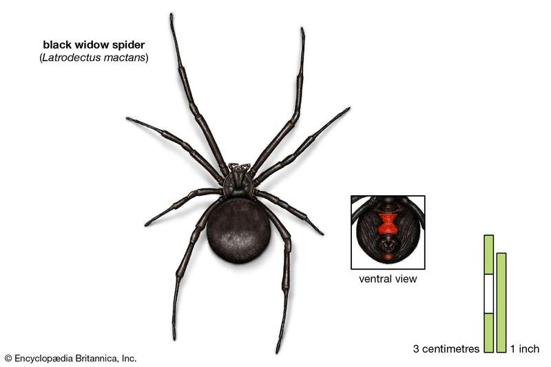
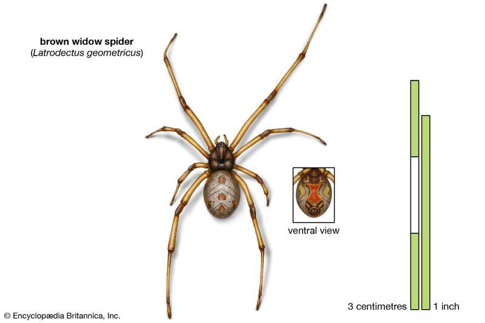
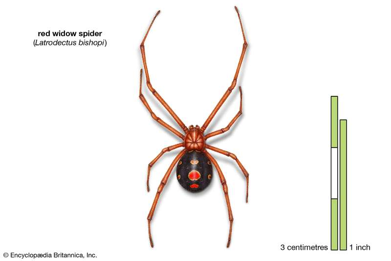

Spiders (order Araneae) are air-breathing arthropods that have eight legs and chelicerae with fangs able to inject venom. They are the largest order of arachnids and rank seventh in total species diversity among all orders of organisms. Spiders are found worldwide on every continent except for Antarctica, and have become established in nearly every habitat with the exceptions of air and sea colonization. As of July 2019, at least 48,200 spider species, and 120 families have been recorded by taxonomists. However, there has been dissension within the scientific community as to how all these families should be classified, as evidenced by the over 20 different classifications that have been proposed since 1900.
| Name | Description | Image |
|---|---|---|
| Black Widow Spider | The black widow is responsible for more than 2,500 visits to poison control centers every year in the U.S. It is one species that can be found from the United States and parts of Canada through Latin America and the West Indies. |  |
| Brown Widow Spider | The brown widow is thought to have evolved in Africa, but the first specimen described came from South America. It is classified as an invasive species elsewhere around the world. Brown widow populations have appeared in southern California, the Caribbean, the U.S. states of the Gulf Coast, as well as in Japan, South Africa and Madagascar, Australia, and Cyprus |  |
| Red Widow Spider | The third widow spider on this list is the red widow, or red-legged widow. The spider’s appearance is distinguished from other widow spiders by its reddish cephalothorax and legs and its reddish-brown to black colored abdomen. Many red widows have a red mark on the underside of the abdomen, which may be either hourglass-shaped, triangle-shaped, or indistinct. |  |